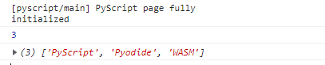

What's New in Pyscript 2022.12.1
Published December 12, 2022
Another couple months have flown by, and PyScript has a shiny new release: PyScript Version 2022.12.1 is now live!.
What follows is a walkthrough of the changes since 2022.09.1, as well as notes on what's changed in the development process, the community, and what's coming next.
What's not covered here in depth are some of the amazing things built with or adjacent to PyScript. In particular, if you haven't seen the technical preview of MicroPython running in the Browser or running Panel apps in the browser with panel convert, you absolutely must. But those deserve their own writeups, and this post will focus on the PyScript release itself.
Now is a great time to remind users that, for consistent long term bevahior, I recommend projects link to pinned releases like https://pyscript.net/releases/2022.12.1/pyscript.js, and not to /latest/pyscript.js. If your project links to /latest, all the improvements in the new release have almost certainly broke it. Pinned releases are the way to go, and there's talk of deprecating/removing /latest in the near future.
And for those who want to get really in the weeds, I've prepared a granular Change and Issue Log of every Issue and Pull Request since the last release. It was made possibly by a (slightly tweaked) version of Ned Batchelder's Dinghy GitHub digest tool
display(), <py-terminal>, and stdout
display()
There's one change to the PyScript API that's so big, it's getting its own whole section! And it has to do with how PyScript outputs to the browser window. print() no longer outputs to arbitrary places in the browser window! The new function to use is called display(). And using print() has some new and interesting behaviors as well.
In "desktop flavored" Python, print() takes the *objects it's given, converts them to strings "like str() does", and sends the results to sys.stdout. sys.stdout is a File-like object with methods like read(), readline(), write(), and so on. It represents a continuous stream of text, plus the idea that various characters break up the stream into "lines." And that's about it. The simplicity of this default output stream is its power - a very similar structure can be used to represent a stream of text into a file, over a network, a buffer, etc.
Prior to 2022.12.1, Python's sys.stdout was routed to the DOM via fairly complicated wrapper setup. However, a browser window has so many more dimensions of possibility for where we might want to place content compared to a terminal. Thus, the metaphor of "use print() and we'll just send some version of that stream to a location on the page" wasn't as useful as it could be.
As of 2022.12.1, print() (i.e. stdout) goes to the developer console; display() is for outputting to the browser window (#749)
display(*values, target=None, append=True)
*values (list) - the list of objects to be displayed. Can be any of the following MIME types:: "text/plain", "text/html", "image/png", "image/jpeg", "image/svg+xml", "application/json" or "application/javascript"
target (str)- the ID of the html tag to output to. If none, output to the current <py-script> tag.
append (boolean) if the output is going to be appended or not to the `target`ed element. It creates a <div> tag if True and a <py-script> tag with a random ID if False
If display() is given a target argument, it will attempt to send its *values to the HTML element on the page with that ID. If not, it will use the currently executing tag (<py-script> or <py-repl>) as that destination. Either way, the content is placed either in a new <div> as a sibling of the currently executing tag, or replace the content at the tag location, depending on whether `append` is true or false.
So for example, in place of the usual print("Hello, world"), one could do one of these (they have slightly different behaviors - try them out!):
display("Hello World")
display("Hello")
display("World")
display("Hello")
display("World", append=False)
display("Hello world", target="target-div")#target-div
display() escapes any HTML given to it as an input string, so display("<br>") prints the literal characters <br> to the screen, instead of creating a newline. For non-string inputs, display(some_obj) calls repr(some_obj) and escapes that. If you do want to inject HTML into your page, a new object is to use the new HTML class (#915):
HTML Class
|
|
You'll see the angle brackets and everything here
") display(HTML("But this is an honest-to-goodness bold paragraph!
"))As part of this reshaping of output, the <py-script output="..."> attribute has been deprecated... at least for now. This means that if you want the stdout of your code to go to a specific place in the browser window, you'll need to handle that on the Python side. One possible way would be to use contextlib.redirect_stdout, but there are many ways to handle that behavior. (#981)
Finally, it's worth nothing that the behavior of placing content based on the currently executing tag doesn't necessarily work for coroutines in async contexts. In most situations, you'll see a helpful warning banner will let you know:
Implicit target not allowed here. Please use display(..., target=...)
But due to some tricky edge cases with how warnings percolate up from coroutines, things currently may just fail silently.
<py-terminal>
So if display() is for writing to the screen, what does print() do? Well, a couple of things, but most visibly, it writes to the <py-terminal>
hello_world_terminal.py
|
|
Hello, world!
I can count to 0
I can count to 1
I can count to 2
I can count to 3
I can count to 4
The <py-terminal> achieves a couple things:
- It makes sure that output to stdout goes somewhere visible; if you copy and paste Python code from your desktop environment to the browser, you can see at least something happening
- If you want to use a terminal-like output for your code, this is a pre-made solution
The behavior and placement of the <py-terminal> is configurable via a new terminal setting in <py-config>. The options are:
| value | description |
|---|---|
"auto" |
(default) Automatically add a <py-terminal auto>, to the page. The terminal is initially hidden and automatically shown as soon as something writes to stdout and/or stderr |
true |
Automatically add a visible <py-terminal> to the page when PyScript loads. It will be added to the end of the <body< unless there is a <py-terminal> tag on the page. |
false |
Don't add <py-terminal> to the page |
So, if you want to stick the terminal somewhere specific, simply include <py-terminal></py-terminal> on your page. You can even include several py-terminals - output to stdout will be sent to all of them.
stdout in the Developer Console
In addition to going to <py-terminal>, writes to stdout also go to the Developer Console. This is the closest analog in the browser to a "dumb terminal", and so it makes a certain amount of sense for stdout to be routed there.
There are certain small differences, since of course the dev console isn't a terminal. For instance, we discovered just the other day that console.log() (which is used to write to the dev console) doesn't output unless it receives a newline. So something like print("Hello world", end = "") won't show up until you log something else with a newline in it! But for simple debugging purposes, or for output where (even temporarily) including a <py-terminal> on the page would be untenable, this is a great addition.
Remarks
If I were a betting man, I'd hedge that the API for display() is likely to continue to change and evolve. It's a brand-new and breaking feature, and I suspect its semantics are going to continue to get tweaked. If you find more issues or inconsistencies, be sure to raise an issue on GitHub or come tell us about it on the PyScript Discord.
Fetching Files with <py-config> [[fetch]]
Previously, all files listed in <py-config> paths: were fetch()'d from the listed URLs and dropped into the embedded filesystem in the same folder as the running Python Script. Which is to say, pointing a path to the relative URL 'data/files/Feb-24/info.txt' would make that file available via with open('info.txt')... .
From PyScript 2022.12.1, <py-config> paths:... has been replaced by <py-config> [[fetch]] ..., and it's much more powerful that its predecessor.
The new options allow the user to fetch multiple files ina way that preserves their URL/directory structure. The parameters are all bundled in a "fetch configuration" table under the <py-config> tag; you can have multiple fetch configurations in a single py-config.
The options for a fetch config are:
| Value | Type | Description |
| `from` | string | Base URL for the resource to be fetched. |
| `to_folder` | string | Name of the folder to create in the filesystem. |
| `files` | List of string | List of files to be downloaded. Cannot be combined with "to_file" |
| `to_file` | string | Name of the target to create in the filesystem. Cannot be combined with "files" |
Breaking that down a bit, here's how I personally think through which parameters to use:
filesvsto_file:- If you want the files in the Emscripten file system to have the same name as on the server, use
files - If you want the files in the Emscripten file system to have a different name than on the server, or if the URL has no file name (e.g. an API endpoint), use
to_file - If
fromis specified, it will be used as the prefix for URL's to down files from (can be absolute or relative). Leave unspecified to reference the same relative URL path as the current document. - If
to_folderis specified, files will be placed in that folder in the Emscripten file system; otherwise, they'll be placed in the same folder Python scripts are executed from
The pseudo-code for what PyScript will fetch is something like this:
if both files and to_file are specified: Error if from is not specified, from = "" #defaults to relative URLs if to_folder is not specified, to_folder = "." #defaults to the working current directory, where Python Scripts are run if files is specified: for each file in files: #These concatenations are done in a smart way to try to avoid dangling/missing "/"s source_URL = from + file destination = to_folder + file download object from the source_url to destination in the local file system else: #"files" not specified: if to_file is specified: download object from url from to (to_folder + to_file) else if from ends in a file-name: #i.e. the part after the last "/" download object from url from to (to_folder + ('filename' at end of from))
Let's look at some recipes for using these new attributes to fetch resources from the web and download them to the Emscripten local file system to Python can use them.
For the examples where we're fetching our own files and modules, we'll assume our site has the following simple structure.
content/
├─ index.html <<< File with <py-config>
├─ info.txt
├─ data/
│ ├─ sensordata.csv
├─ packages/
│ ├─ my_package/
│ │ ├─ __init__.py
│ │ ├─ helloworld/
│ │ │ ├─ __init__.py/
│ │ │ ├─ greetings.py/
Single File
|
|
Single File w/ Renaming
|
|
To Another Local Folder
|
|
From Another Folder to Current Working Directory
|
|
From a Folder, to A Folder
|
|
Multiple Files, Preserving Folder Structure
|
|
Multiple Fetch Configs
|
|
From an API Endpoint
|
|
--- Expand Examples ---
PyScript
Reshaping the Python API
Previously, it wasn't possible to use any of PyScript's python API in resources outside of <py-script> tags. Now, import pyscript just works! But there's so much more going on than that.
(Almost) all of the global variables which PyScript previously made available by default have been moved into the pyscript module, and should now be imported to be used. The remaining global objects are: the js module, the pyscript module, the Element class (pyscript.Element), the display() function (pyscript.display()), and the HTML class (pyscript.HTML).
The following global objects in PyScript 2022.09.1 should no longer be accessed as global objects, but can be imported as normal
- stdlib modules:
asyncio,base64,io,sys,time,datetime,pyodide,micropip. Alsotextwrap.dedent - PyScript Objects:
PyScript(the class),PyItemTemplate,PyListTemplate,PyWidgetTheme,add_classes,create,loop - Private PyScript Names (members of the pyscript module, were global, but should be treated as private):
eval_formatter,format_mime,identity,render_image,MIME_RENDERERS,MIME_METHODS - From js module:
document,console
For example, check out the difference between the following two pieces of code from the previous and current versions:
2022.09.1 Example
|
|
2022.12.1 Equivalent
|
|
Users who want to make use of PyScript-specific functions in their own modules can now use import pyscript to access the objects in the pyscript module.
Not to leave users in a lunch with this large API change, all of the global objects where were previosusly prevent are still accessible but deprecated. Accessing them directly will pop up a handy error message like:
For context: prior to this version, all of the Python side of PyScript - the hooks which made stdout work, Element.write(), the PyScript class - was included into user code in a clever but inintuitive way. The methodology equivalent to loading the contents pyscript.py as a string and calling exec(contents) on that string. This worked, but made it difficult for users to use these PyScript functions in their own modules, and limited how the module could be used for type-checking. Things are better now!
Plugins!
As was so nicely phrased on the October Community Call, PyScript is aiming to be a "platform", not a "framework". That is, it should provide lots of hooks, triggers, and signals to allow users to expand the usability of PyScript, rather than forcing users to do things "The PyScript Way."
The idea of using "plugins" to do this has been floating around for awhile now - some straightforward way of allowing users to cause their own code to be run at certain points in the PyScript lifecycle. But within that "simple" idea are many questions - should this be JavaScript or Python Code (or both/either)? Should the triggering mechanism be callback-based, event-based, or some other way? How much of the core functionality of PyScript should happen every time, or should we simply define a lifecycle and move everything to a Plugin?
PyScript 2022.12.1 gets the ball rolling on this by allowing users to author plugins in Python and use them to extend PyScript. (#961) This behavior has only be recently merged, and deserves it's own full writeup anyway, but here's a brief description of the process of authoring a Python plugin:
- In a separate
.pyfile (module), write a class that extends thepyscript.Pluginclass. - This class can implement any of the valid Python named lifecycle callbacks, which will be called at determined points in the PyScript loading lifecycle.
- We could use some more documentation on these methods, to be honest, but the development on this is flying fast and furious. Keep your eyes peeled!
- In this module, create an instance of this class named
plugin, and pass the constructor the name of the plugin. I.e.plugin = Plugin("myNewPlugin") - In
<py-config>, add the URL (relative or absolute) of this file to the "plugins" attribute. I.e.plugins = ['../my_folder/plugins/myNewPlugin.py"] - When PyScript reaches any of the defined lifecycle points, the corresponding methods of the Plugin will be called.
Additionally, there's provision on the Python side for creating custom HTML elements via a Python plugin. See the Markdown Plugin example for a demo of how this works.
Finally, PyScript is using a plugin system internally to implement some of its core behaviors. The <py-terminal> page element (#917), the splashscreen which appears when PyScript is loading, and the importmap functionality which allows loading importmap ES modules into Python (#938), are all implemented in TypeScript as plugins. Currently, there's no ability for the user to write their own JavaScript plugins, but that's a potential (and powerful) behavior for the future.
No More Implicit Coroutines
Prior to version 2022.12.1, PyScript allowed the use of Top-Level-Await statements. That is, await, async for, and async with outside of coroutines (async def functions). When it encountered such a block of Python, it automatically wrapped the block up into a coroutine and scheduled it to run in the event loop.
As of PyScript 2022.12.1, this is no longer allowed. Users should write their async functions as coroutines using async def, and schedule them using the allowed webloop methods like asyncio.create_task() or asyncio.ensure_future()
The doesn't actually remove anything that was previously possible with PyScript - it only requires that users be more explicit about scheduling their coroutines. Compare the two following, equivalent examples from PyScript 2022.09.1 and 2022.12.1:
2022.09.1 Example
|
|
2022.12.1 Equivalent
|
|
For more techniques and background, you can check out my long writeup on Asyncio in PyScript from last month. Antonio and I also got deep in the weeds of how Pyodide's runPythonAsync() works (which we previously used to implicitly schedule coroutines), and some of its limitations, if you want to dive even deep.
PyScript JS module
Pyodide Runtime Access
pyscript.js now exposes the instance of Pyodide it creates as a JavaScript object. Users wishing to run code directly in Pyodide, or to use another JavaScript module that interacts directly with Pyodide, can use this exported reference to do so. (#868)
The Pyodide runtime is accessible as pyscript.runtime.interpreter, like so:
|
|
Note that the runtime will not be available until it has been loaded by PyScript and initialized. In the example above, we use a button to defer executing the desired code until sometime after PyScript has initialized; in the next example, we'll use an Event.
The pyscript.runtime.globals attribute holds a reference to Python globals() dictionary, making it easy to reference Python objects from JavaScript. By the wonder that is Pyodide, the objects are proxied back and forth pretty much seamlessly, but especially when logging to the console, using the toJs() function makes the conversion explicit:
|
|
Dev Console Result:
PyScript Version Numbers (JavaScript)
You can also access the current version of PyScript via the pyscript js module at pyscript.version. This will appear as a "dotted string" like 2022.12.1.dev But version numbers are even more powerful on the Python side.
PyScript Version Numbers (Python)
Up to this point, the current PyScript version is something a user would have to infer from what URL they sourced pyscript.js from. As of version 2022.12.1, though, you can access that information directly in Python via a couple of new attributes.
PyScript.version_info is a nametuple representing the current version in a code-savvy way - it's intended for use when comparing version numbers, i.e. to establish feature compatibility. For example:
Using version_info
|
|
On the other hand, PyScript.__version__ is a human-readable version of the current version, like "2022.12.1.final"
Using __version__
|
|
<py-button>, <py-inputbox>, <py-box>, and <py-title> are Deprecated
All four of these custom HTML elements, which have been present in PyScript since its alpha release, have been deprecated. In the continuing vein of trying to make PyScript into a strong, versatile, and minimal core, it was decided that these elements weren't really key - they're easy enough to implement with PyScript, enough so that they don't need to be included elements by default. <py-button> and <py-inputbox> are simple enough to replicate with existing HTML elements and event listeners, while <py-box> and <py-title> were pre-formatted <div>s.
Those components haven't been fully removed from PyScript yet, just deprecated, and nicely, the deprecation warning banner that appears suggests altenate elements with new CSS classes that maintain the old elements' styling. The suggested solutions are:
| Deprecated Tag | Replacement Solution |
|---|---|
<py-button> |
<button py-click="function()" class="py-button"> |
<py-inputbox> |
<input class="py-input"> |
<py-box> |
<div class="py-box"> |
<py-title> |
<h1> |
Better Warnings and Errors
Fabio Rosado (yes, there's two Fabios on the PyScript team now!) put together a series of great PRs that clean up the presentation of warnings and errors caused during PyScript's lifecycle.
If you write invalid TOML for <py-config>, say, or use a deprecated function or feature. (#909). The banners can contain either plain text or HTML, which will allow us a lot of flexibility going forward in how we use them. (#947)
And you might notice, the PyScript errors errors now include error codes! As the PyScript codebase grows, and community involvement increases, having short-and-simple error codes helps users find solutions to exactly the issue they're having. It encourages users to report "When I do X, I get a PY2401 error" instead of just "I got an error." This improves searchability the error code docs, in the forums, and on discord, and makes it simpler to guide users to solutions to specific issues they're encountering in the PyScript lifecycle. (#959)
The styling of errors that occur within Python has also been improved, and reformatted to be more legible on the page:
Traceback (most recent call last):
File "/lib/python3.10/site-packages/_pyodide/_base.py", line 435, in eval_code
.run(globals, locals)
File "/lib/python3.10/site-packages/_pyodide/_base.py", line 304, in run
coroutine = eval(self.code, globals, locals)
File "<exec>", line 1, in <module>
ZeroDivisionError: division by zero
Streamlined py-config
The py-config system has been overhauled to simply its use internally - including simplifying how the default configuration options are merged with user-supplied options (#806), dealing with multiple <py-config>s on a page (#826), and finally killing <py-env> altogether (#775).
The TOML parser handling has also been improved, in that it no longer hangs forever if given misshapen TOML. (#815)
An important clarification has also been added to the docs - because of the way the TOML format works, if you're using TOML for your py-config, [[runtimes]] must be the last element. If the [[runtimes]] table precedes the other individual elements (like `paths` or `packages`), those elements end up inside [[runtimes]], which will cause them to be missed. (#861)
This in addition to the changes to [[fetch]] noted above.
Undefined elements are no longer hidden
Previous, any unknown HTML elements were hidden by pyscript.css in an attempt to suppress onscreen visibility of things like <py-config>. This had the unintended consequence of hiding elements with typos - for example, a user-typed <py-scrip> element would be "unknown" and also hidden. Now, PyScript explicitly only hides the page-elements that need hiding. (#837)
Directory Listings for Releases
PyScript releases now come with a directory-listing of files and a brief example. See, for example, https://pyscript.net/unstable. (#839)
CodeMirror 6
Just like JupyterLab 6, PyScript now uses the latest version of CodeMirror to power the in-browser <py-repl> component. This comes with a (far more stable) API and lots of other improvements. (#814)
Infrastructure
Documentation
Especially in the past couple weeks, there's been a flood of new additions to the documentation! As the changes and improvements for this release settled into their final form, the team focused on making sure as many of the changes were documented as possible. A small sample of the new pages:
- API reference for
Element,display(),__version__, andversion_info - Updating Implicit Async to Explicit,
- The pyscript module in javascript
- Exceptions and Error Codes
- Using [[fetch]] from py-config
- Writing content to the Page
Dev Docs
The PyScript Documentation now has a Development Section, as a central place for notes about how the development and release process for PyScript works. In particular, there are documents on the deprecation cycle, getting your development environment set up, and making and submitting a pull request.
Refactoring PyScript
Antonio, Mariana, Madhur, and many more besides have embarked on several of massive refactoring endevours of the TypeScript side of PyScript, to streamline and rationalize the process of how PyScript loads itself and Pyodide and how it then executes Python scripts. Hopefully the changes this imparts to the end-users of PyScript are minimal, but speaking from a maintenance and codebase standpoint, the amount that's been done to make sense of both of these processes makes it a significantly easier to reason about what-happens-when. (#806, #850, #881, #884)
Testing
The pytest-driven test system used to re-download the Pyodide runtime and other resources for each test, significantly slowing it down. The test system now has the ability to cache resources between tests, and retry tests on network failures. (829)
We also now have a way for the test system to watch for and confirm that specific errors are being thrown, allowing for the writing of negative integration tests (that should throw specific errors in PyScript). (#874)
Re-Sync'd Docs
Prior to this release, documentation was being pushed to https://docs.pyscript.net/latest every time a change to the docs was merged into the main branch. This meant that the default (latest) version of the docs represented features which were present in the codebase, but had yet to be released!
Now, the /latest version of the docs corresponds to the most recent released version of PyScript. Users looking for bleeding-edge docs can find them at https://docs.pyscript.net/unstable/. (#977)
Goodbye Svelte
The original version of the PyScript Demo Site and other parts of the build infrastructure and styling were built around Svelte. Thanks to several PRs and lots of refactoring, Svelte is now entirely gone (#806, #830, #886)
Pyodide
Pyodide did have another minor release recently, 0.21.3. And while it wasn't anywhere near as big a change as the 0.20 to 0.21 release, a few critical fixes did make their way in. See the Pyodide Changelog for details.
Relative URLs for Index URLs
In Version 0.21.2, it was briefly impossible to use a relative URL as a the indexURL for the Pyodide package (where it looks to load the Python side of its runtime and other key support files). That's now fixed. (Pyodide # 3077)
Source Maps Restored
A couple PyScript users reported concerns about seeing a "Source Map Unavailable" error in their dev console, thinking they had done something wrong. Turns out that was due to a minor regression in Pyodide causing that source map file not to be distributed. That's since been rectified. (Pyodide #3088)
Community
Discord
The PyScript Discord is now the official hub for realtime communication around PyScript - both internally for the maintainers and the for the community to gather, ask questions, and get help.
This is a really amazing shift by the staff PyScript team over at Anaconda - to bring the conversations about PyScript out to a place where the community can see them and be a part of them. Want to see the maintainers getting deep in the weeds about the Plugins API, how [[fetch]] should work, or what qualifies as "a Python"? It's all out in the open on Discord.
Similarly, there's more an more Pyscripters hanging out in the Discord #chat and #pyscript-help channels, to help folks get unstuck or identify issues. And the #i-made-this and #i-found-this are great places to share neat things you've made or discovered with PyScript.
Come join us!
October Community Call
The PyScript core team hosted its first Community Call on October 18th! (#836) About a dozen people attended, mostly from the PyScript core team and related contributors. We unfortunately forgot to hit 'record' on the call, but I did jot down a few notes. (None of this should be taken as gospel or comprehesive; It's just what I, one dude, happened to scribble down.)
- The team is going to be shooting for about 1 release per month - maybe more, maybe less, but that's a decent goal.
- The lifecycle refactoring is well underway, with Antonio C leading the charge on removing global variables, streamining the loading, etc.
- Similarly, the refactoring away from print() to display() being lead by Mariana was just merged yesterday!
- Plugins!
- The team is excited about streamlining and minimizing the core details of what PyScript does. There's a feeling that when PyScript initializes, it should do a 'bare minimum' to get itself running, and delegate lots of core behaviors to plugins, to allow for customizability, extensibility, and futureproofing. An emphasis on PyScript being a 'platform' not a 'framework'
- It is very early days for this idea, but there's lots of excitement around it.
- Web Workers are an awesome way to delegrate work, but there's going to be a significant amount of work integrating the message passing/isolation process with PyScript.
- Cleaning up the PyScript API would be nice, in the sense of the Python objects in PyScript.py are currently available by default when executing PyScript. Generally, there's agreement around this wanting to all be contained in a module, though there's some questions around what of that would want be
imported by default into a PyScript environment. - This would allow IDE's and intellisense to have a chance at working with PyScript.
November Community Call
The second-even community call was held November 16th, also on Zoom, and also with a ton of great discussion and conversation. I personally missed the first three-quarters of it (I had a 45-foot tall Christmas tree to get lit), but Nicholas very kindly took notes in addition to his hosting duties, which are reproduced below:
- We need to ensure we have an agenda. We've agreed to think about this and suggest proposals here so we have a process to try by our next community call.
- Given Discord does video calls, and/or there's Twitch and other services for streaming meetings that are more in or of the platform we're using for our community, we should perhaps look at those as an alternative to Zoom.
- Perhaps we should record our meetings..?
- PyCon US next year, what's going on. We should coordinate, compliment and amplify each others' work / efforts in this area. Can tell all here please..?
- Antonio - can you let Jeff know what's coming in the plugin work? (This might be helpful context: https://github.com/pyscript/pyscript/pull/938)
- We had some really great in-depth technical discussion about web-assembly, DOM and JS access, GCs, blocking calls, dynamic linking and all sorts of other good stuff... oh my..!
- A very positive vibe. Let's keep this up. 🎉
And indeed, the vibes were incredibly positive. Every maintainer on the PyScript project has gotten their hands on (in my opinion) some very neat part of PyScript in the past two months. I'm very much looking forward to what this enthusiastic, generous, and considerate team does next.
Awesome PyScript
Maintainer Paul Everitt has been hard at work assembling Awesome PyScript, a curated list of awesome things relative to PyScript. If you want inspiration on what PyScript can do, this is the place to go - there's collections of videos, demos, conference talks, and more.
Have you done something awesome with PyScript? Drop the Awesome PyScript repo a comment or a Pull Request to have it included!
PyScript/Research
A new GitHub repository at PyScript/Research has been started, as a home for overarching research, development, and proposals for PyScript. New and great ideas were popping up in issues in the main repo and being lost somewhat, so the new repo is a home for larger proposals that need need multiple files to explain, or that generate longer discussions than fit in a single issue.
The PyScript Team
New Maintainers
Paul Everitt, Fabio Rosado and I are now community maintainers on the PyScript project. It's been tremendously exciting and satisfying working on and with PyScript the past few months - the core team over at Annaconda has been swell all around, and I'm very grateful to be a part of the team in my own way. (#824 #825 #898)
What's Next?
Web Workers
Running everything in the browser window's main thread is a bit of a bummer - anything running in Python blocks the main thread, no UI updates can happen, everything must either be async or really quick to avoid degrading the user experience.
To counteract this, there's work afoot to enable the option of running PyScript inside Web Workers, which are designed for running scripts in the background of the page asynchronously, and passing messages to and from the main browser thread. But because they operate in a scope that doesn't have the window object, DOM events and methods are not necessarily available to them. Given that DOM interaction is one of the neat possilities that running Python in the browser enables, there's lots to chew over in terms of allowing Python to run in a Web Working without degrading the DOM-access experience.
Scoped Tags
Right now, every <py-script> and <py-repl> tag executes in the same global scope. This is convenient for all the reasons that having global scope is convenient, and awful for all the reasons it's awful. There's much discussion afoot of turning each <py-script> tag into its own local namespace, probably with the ability to allow tags to share namespaces if desired.
This is one I'm personally very-much looking forward to. As I'm currently working through this year's Advent of Code entirely in PyScript, the challenge of not duplicating variable/function names across 50 different Python modules is a huge headache. That said, there are many good reasons to allow tags to share namespaces, so that code can be located close to its context. More to come here, I'm sure.
Events
There's a proposal (a couple proposals) swirling around over in PyScript/Research about the syntax for events ("py-[event]" or "onclick" or otherwise). What's exciting is that there's tons of possibilities! Now the hard part will be to sort together the possibilities and potentiatials, weight up the pros and cons (run functions in Python vs. JavaScript, access to JS and/or Python objects as arguments, do we pass literal code or references to Callables, etc) and make the call.
...At least for now. This is another area that might see two or three more rounds of evolution before it stabilizes. Or even potentially splits into more than one thing - there may be multiple independent systems being developed that can coexist. Time will tell.
PyScript's Python API
With the modularization of the Python API, things have gotten quite a bit more rational in the way PyScript handles importing its "built-in" functions and classes. But as the possibilities around functionality, plugins, web-workers, and scope grow, I wouldn't be surprised if we continue to see the PyScript Python API continue to morph and change.
So watch this space, follow the PyScript Twitter (or mine!), join the Discord, send the GitHub issues and pull requests, and show off the neat things you've built with PyScript!